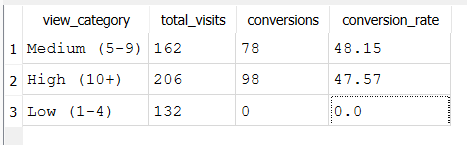
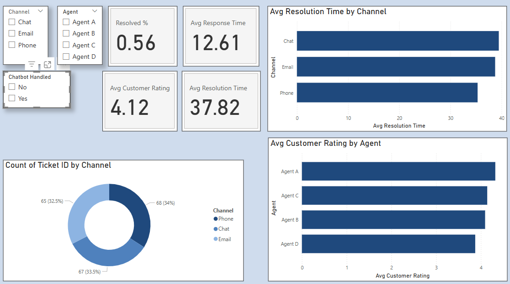

Used Car Sales Performance Analytics Dashboard
Interactive Power BI dashboard analyzing vehicle sales performance, inventory efficiency, customer feedback, and sales agent productivity to identify trends, optimize inventory management, and support data-driven business decisions.
Download PBIX View Case Study
Detroit Shock Fan Lifecycle & CRM Intelligence Dashboard
Advanced Power BI dashboard combining fan lifecycle modeling, behavioral segmentation, data quality monitoring, and next-best-action recommendations to support customer retention and engagement strategy.
Download PBIX View Case Study
US Healthcare Analysis Dashboard
End-to-end Power BI healthcare analytics project featuring data transformation, DAX calculations, patient admissions analysis, diagnostic reporting, healthcare utilization metrics, cost analysis, and interactive patient exploration.
Download PBIX View Case Study
Credit Card Customer Retention & Churn Analytics Dashboard
Advanced Power BI dashboard analyzing customer attrition, engagement patterns, credit behavior, and retention opportunities. Combines customer segmentation, behavioral analytics, KPI monitoring, and risk identification to support data-driven retention strategies.
Download PBIX View Case Study
Detroit Shock Fan Segmentation & Revenue Analytics
Built a multi-page Power BI dashboard using SQL-modeled fan data to deliver audience-level insights across revenue, engagement, and digital touchpoints—supporting executive, CRM, and revenue stakeholders with connected funnel-ready reporting.
Download PBIX View Case Study
Hillman College Student Success & Early Alert Analytics
Designed a multi-page Power BI analytics platform using SQL and Python-generated student data to support early alert systems, retention analysis, and institutional research insights—enabling proactive advising and data-informed student success strategy.
Download PBIX View Case Study
SQL Website Customer Insights
Created an SQLite database of synthetic website visitor data. Ran advanced SQL queries to uncover conversion rates, average time on site by device, and campaign performance with detailed tables.
View SQL File View Table
Customer Experience KPI Dashboard
Built a Power BI dashboard to track support metrics including resolution time, percent resolved, customer ratings, channel trends, and agent performance.
Download PBIX View README